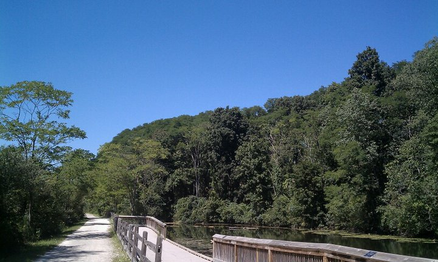

|
 |
 |
||
 |
||||
 |
 |
|||
 |
||||
Home > Parks > Rochester >Paint Creek trail
Paint Creek deserves a special marking in my book. When I was young and impressionable, this trail implanted a tremendous sense of curiosity. "If there is a 10 mile trail out here, what else could there be?!" Not only that, it served as a good initial workout, from memory the first one I had ever had. Because of that and it's natural beauty, it's a special path for me.
Videos:
Unfortunately, I have no clear videos of this path. I've recorded it before, but my camera fogged up and the image became undesirable.
However, since we're on the topic of memorable trails, this is one that also helped me get started in biking. For 3 months straight, I was up at sunrise doing this ride.

Above: Photos of the park. Most of these are taken by me.
Below: A screenshot of the Google maps bike overlay. These are trails I rode and tracked with a GPS, then went into Google and created the layer. Layers are not embeddable, so clicking on the link will take you to Google maps.